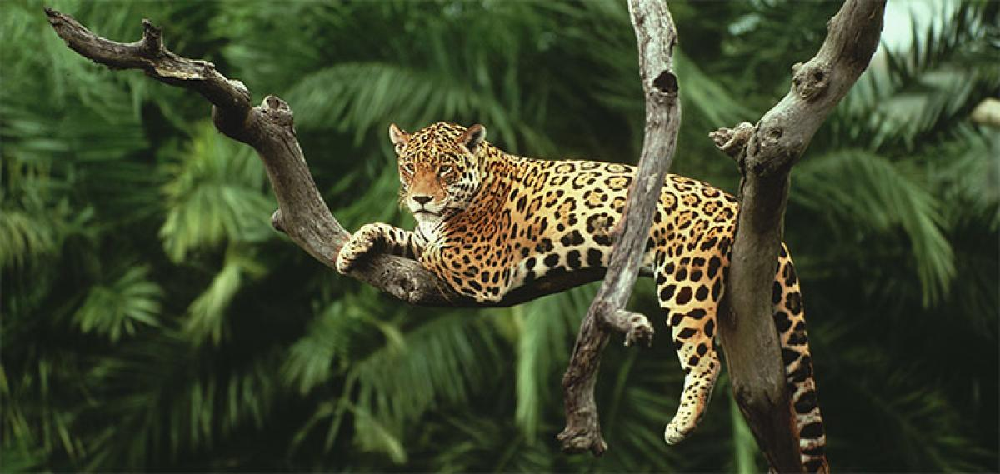

WILDLIFE
Wildlife refers to undomesticated animal species, but has come to include all organisms that grow or live wild in an area without being introduced by humans.[1] Wildlife was also synonymous to game: those birds and mammals that were hunted for sport. Wildlife can be found in all ecosystems. Deserts, plains, grasslands, woodlands, forests, and other areas, including the most developed urban areas, all have distinct forms of wildlife. While the term in popular culture usually refers to animals that are untouched by human factors, most scientists agree that much wildlife is affected by human activities.[2] Some wildlife threaten human safety, health, property, and quality of life. However, many wild animals, even the dangerous ones, have value to human beings. This value might be economic, educational, or emotional in nature.
Animals:
TIGERLION
ELEPHANT
GIRAFFE